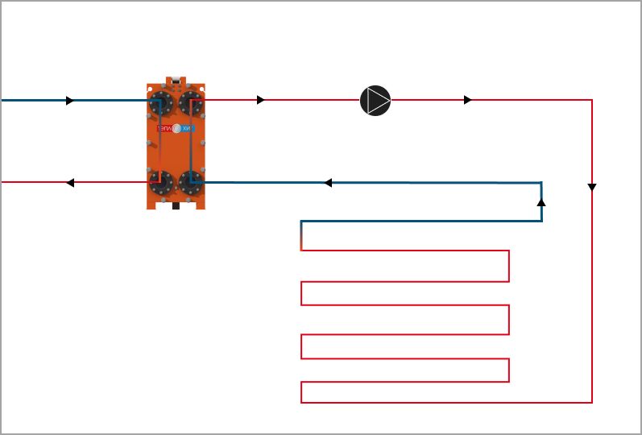

В зимнее время года на площадях, придомовых территориях, въездах и прочих, с помощью системы снеготаяния можно обеспечить таяние снега и льда. Такая система, во-первых, обеспечивает комфортное обслуживание территории, а во-вторых, что немаловажно, избавляет от гололеда. С помощью электроподогрева это было бы затратно, однако, используя теплообменник можно добиться приемлемых затрат под данную задачу.
Теплообменник для системы снеготаяния представляет собой классический двухконтурный теплообменник, по одному из контуров которого циркулирует незамерзающая жидкость (пропиленгликоль или этиленгликоль). По другому контуру - теплоноситель.
Незамерзающая жидкость движется через систему труб, расположенных под обогреваемой площадкой, затем подогреваясь в теплообменнике. Для того, чтобы обеспечить таяние снега нужно поддерживать у незамерзайки определенную температуру, при этом не дать ей остыть. Для этого обеспечивается высокий показатель расхода жидкости по нагреваемому контуру теплообменника.
На схеме наглядно показано условное место теплообменника в системе, а также направления цирукляции жидкостей по контурам.
Теплообменник рассчитан на 200 кВт. Используется жидкость с высокой концентрацией пропиленгликоля (70%), которая подогревается до 20 °C и не остывает ниже 10 °C. Таким образом обеспечивается снеготаяние.